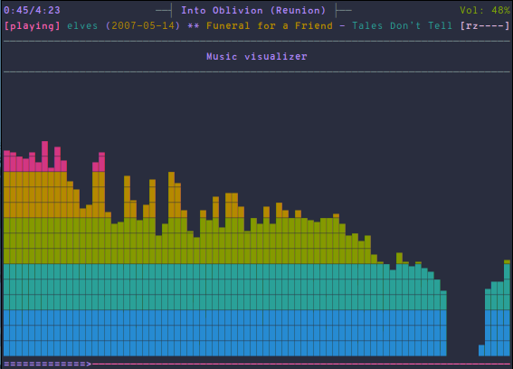

Various Music player configurations
Table of Contents
- Applications
- MPD
- Files And Directories
- General Settings
- User and Group
- Network
- Unix Socket
- Port
- Log Level
- Restore Paused
- Absolute Path in Playlists
- Metadata Used
- Automatic Updates
- Limit Watched Directories
- Symbolic Links Behavior
- Zeroconf / Avahi Service Discovery
- Permissions
- Database
- Input
- Audio Output
- Normalization automatic volume adjustments
- Character Encoding
- Other dependencies
- ncmpcpp
- MPDScribble
- Scripts
- MPD
Applications
MPD
MPD is an audio player that has a server-client architecture. It plays audio files, organizes playlists and maintains a music database, all while using very few resources. In order to interface with it, a separate client is needed1.
Files And Directories
Music Directory
This setting controls the top directory which MPD will search to discover the available audio files and add them to the daemon's online database. This setting defaults to the XDG directory, otherwise the music directory will be be disabled and audio files will only be accepted over ipc socket (using file:// protocol) or streaming files over an accepted protocol.
music_directory "~/Music"
Playlist Directory
This setting sets the MPD internal playlist directory. The purpose of this directory is storage for playlists created by MPD. The server will use playlist files not created by the server but only if they are in the MPD format. This setting defaults to playlist saving being disabled.
playlist_directory "~/.config/mpd/playlists"
DB File
This setting sets the location of the MPD database. This file is used to load the database at server start up and store the database while the server is not up. This setting defaults to disabled which will allow MPD to accept files over ipc socket (using file:// protocol) or streaming files over an accepted protocol.
db_file "~/.local/share/mpd/database"
Log File
These settings are the locations for the daemon log files for the daemon. The special value "syslog" makes MPD use the local syslog daemon. This setting defaults to logging to syslog. If you use systemd, do not configure a log_file. With systemd, MPD defaults to the systemd journal, which is fine.
log_file "syslog"
PID File
This setting sets the location of the file which stores the process ID for use of mpd –kill and some init scripts. This setting is disabled by default and the pid file will not be stored. If you use systemd, do not configure a pid_file.
pid_file "~/.local/share/mpd/pid"
State File
This setting sets the location of the file which contains information about most variables to get MPD back into the same general shape it was in before it was brought down. This setting is disabled by default and the server state will be reset on server start up.
state_file "~/.local/state/mpd/state"
Sticker File
The location of the sticker database. This is a database which manages dynamic information attached to songs.
sticker_file "~/.local/share/mpd/sticker.sql"
General Settings
User and Group
This setting specifies the user that MPD will run as. MPD should never run as root and you may use this setting to make MPD change its user ID after initialization. This setting is disabled by default and MPD is run as the current user.
#user "nobody"
This setting specifies the group that MPD will run as. If not specified primary group of user specified with "user" setting will be used (if set). This is useful if MPD needs to be a member of group such as "audio" to have permission to use sound card.
#group "nogroup"
Network
This setting sets the address for the daemon to listen on. Careful attention should be paid if this is assigned to anything other than the default, any. This setting can deny access to control of the daemon. Not effective if systemd socket activation is in use.
#bind_to_address "any"
Unix Socket
#bind_to_address "~/.mpd/socket"
Port
This setting is the TCP port that is desired for the daemon to get assigned to.
#port "6600"
Log Level
Suppress all messages below the given threshold. Use "verbose" for troubleshooting. Available setting arguments are "notice", "info", "verbose", "warning" and "error".
#log_level "notice"
Restore Paused
Setting "restore_paused" to "yes" puts MPD into pause mode instead of starting playback after startup.
#restore_paused "no"
Absolute Path in Playlists
This setting enables MPD to create playlists in a format usable by other music players.
#save_absolute_paths_in_playlists "no"
Metadata Used
This setting defines a list of tag types that will be extracted during the audio file discovery process. The complete list of possible values can be found in the user manual.
#metadata_to_use "artist,album,title,track,name,genre,date,composer,performer,disc"
Automatic Updates
This setting enables automatic update of MPD's database when files in music_directory are changed.
auto_update "yes"
Limit Watched Directories
Limit the depth of the directories being watched, 0 means only watch the music directory itself. There is no limit by default.
#auto_update_depth "3"
Symbolic Links Behavior
If this setting is set to "yes", MPD will discover audio files by following symbolic links outside of the configured music_directory.
#follow_outside_symlinks "yes"
If this setting is set to "yes", MPD will discover audio files by following symbolic links inside of the configured music_directory.
#follow_inside_symlinks "yes"
Zeroconf / Avahi Service Discovery
If this setting is set to "yes", service information will be published with Zeroconf / Avahi.
#zeroconf_enabled "yes"
The argument to this setting will be the Zeroconf / Avahi unique name for this MPD server on the network. %h will be replaced with the hostname.
#zeroconf_name "Music Player @ %h"
Permissions
If this setting is set, MPD will require password authorization. The password setting can be specified multiple times for different password profiles.
#password "password@read,add,control,admin"
This setting specifies the permissions a user has who has not yet logged in.
#default_permissions "read,add,control,admin"
Database
An example of a database section instead of the old 'db_file' setting. It enables mounting other storages into the music directory.
#database { # plugin "simple" # path "~/.local/share/mpd/db" # cache_directory "~/.local/share/mpd/cache" #}
An example of database config for a satellite setup
#music_directory "nfs://fileserver.local/srv/mp3" #database { # plugin "proxy" # host "other.mpd.host" # port "6600" #}
Input
input { plugin "curl" # proxy "proxy.isp.com:8080" # proxy_user "user" # proxy_password "password" }
Audio Output
MPD supports various audio output types, as well as playing through multiple audio outputs at the same time, through multiple audio_output settings blocks. Setting this block is optional, though the server will only attempt autodetection for one sound card.
- An example of an ALSA output:
#audio_output { # type "alsa" # name "My ALSA Device" ## device "hw:0,0" # optional ## mixer_type "hardware" # optional ## mixer_device "default" # optional ## mixer_control "PCM" # optional ## mixer_index "0" # optional #}
- An example of an OSS output:
# # #audio_output { # type "oss" # name "My OSS Device" ## device "/dev/dsp" # optional ## mixer_type "hardware" # optional ## mixer_device "/dev/mixer" # optional ## mixer_control "PCM" # optional #}
- An example of a shout output (for streaming to Icecast):
#audio_output { # type "shout" # encoder "vorbis" # optional # name "My Shout Stream" # host "localhost" # port "8000" # mount "/mpd.ogg" # password "hackme" # quality "5.0" # bitrate "128" # format "44100:16:1" ## protocol "icecast2" # optional ## user "source" # optional ## description "My Stream Description" # optional ## url "http://example.com" # optional ## genre "jazz" # optional ## public "no" # optional ## timeout "2" # optional ## mixer_type "software" # optional #}
- An example of a recorder output:
#audio_output { # type "recorder" # name "My recorder" # encoder "vorbis" # optional, vorbis or lame # path "/var/lib/mpd/recorder/mpd.ogg" ## quality "5.0" # do not define if bitrate is defined # bitrate "128" # do not define if quality is defined # format "44100:16:1" #}
- An example of a httpd output (built-in HTTP streaming server):
#audio_output { # type "httpd" # name "My HTTP Stream" # encoder "vorbis" # optional, vorbis or lame # port "8000" # bind_to_address "0.0.0.0" # optional, IPv4 or IPv6 ## quality "5.0" # do not define if bitrate is defined # bitrate "128" # do not define if quality is defined # format "44100:16:1" # max_clients "0" # optional 0=no limit #}
- An example of a pulseaudio output (streaming to a remote pulseaudio server)
#audio_output { # type "pulse" # name "My Pulse Output" ## server "remote_server" # optional ## sink "remote_server_sink" # optional ## media_role "media_role" #optional #}
- An example of a winmm output (Windows multimedia API).
#audio_output { # type "winmm" # name "My WinMM output" ## device "Digital Audio (S/PDIF) (High Definition Audio Device)" # optional # or ## device "0" # optional ## mixer_type "hardware" # optional #}
- An example of a wasapi output (Windows multimedia API).
#audio_output { # type "wasapi" # name "My WASAPI output" ## device "Digital Audio (S/PDIF) (High Definition Audio Device)" # optional # or ## device "0" # optional ## mixer_type "hardware" # optional ## Exclusive mode blocks all other audio source, and get best audio quality without resampling. ## exclusive "no" # optional ## Enumerate all devices in log. ## enumerate "no" # optional #}
- An example of an openal output.
#audio_output { # type "openal" # name "My OpenAL output" ## device "Digital Audio (S/PDIF) (High Definition Audio Device)" # optional #}
- An example of an sndio output.
#audio_output { # type "sndio" # name "sndio output" # mixer_type "hardware" #}
- An example of an OS X output:
#audio_output { # type "osx" # name "My OS X Device" ## device "Built-in Output" # optional ## channel_map "-1,-1,0,1" # optional #}
- Example "pipe" output:
#audio_output { # type "pipe" # name "my pipe" # command "aplay -f cd 2>/dev/null" ## Or if you're want to use AudioCompress # command "AudioCompress -m | aplay -f cd 2>/dev/null" ## Or to send raw PCM stream through PCM: # command "nc example.org 8765" # format "44100:16:2" #}
- An example of a null output (for no audio output):
#audio_output { # type "null" # name "My Null Output" # mixer_type "none" # optional #}
- Pipewire Output
audio_output { type "pipewire" name "PipeWire Sound Server" }
- FIFO Output
audio_output { type "fifo" name "Visualizer feed" path "/tmp/mpd.fifo" format "44100:16:2" }
Normalization automatic volume adjustments
- Replaygain
This setting specifies the type of ReplayGain to use. This setting can have the argument "off", "album", "track" or "auto". "auto" is a special mode that chooses between "track" and "album" depending on the current state of random playback. If random playback is enabled then "track" mode is used. See https://wiki.hydrogenaud.io/index.php?title=Replaygain for more details about ReplayGain.This setting is off by default.
#replaygain "album"
- Preamp
This setting sets the pre-amp used for files that have ReplayGain tags. By default this setting is disabled.
#replaygain_preamp "0"
- Missing Preamp
This setting sets the pre-amp used for files that do NOT have ReplayGain tags. By default this setting is disabled.
#replaygain_missing_preamp "0"
- Limit
This setting enables or disables ReplayGain limiting. MPD calculates actual amplification based on the ReplayGain tags and replaygain_preamp / replaygain_missing_preamp setting. If replaygain_limit is enabled MPD will never amplify audio signal above its original level. If replaygain_limit is disabled such amplification might occur. By default this setting is enabled.
#replaygain_limit "yes"
- Volume Normalization
This setting enables on-the-fly normalization volume adjustment. This will result in the volume of all playing audio to be adjusted so the output has equal "loudness". This setting is disabled by default.
volume_normalization "yes"
Character Encoding
If file or directory names do not display correctly for your locale then you may need to modify this setting.
#filesystem_charset "UTF-8"
Other dependencies
mpd-mpris
This is needed for controlling mpd via playerctl.
ncmpcpp
 My favorite MPD client. Has its own hooks on every state changes, very useful for notification.
My favorite MPD client. Has its own hooks on every state changes, very useful for notification.

Figure 1: MPD cover art notification
Directories
NCMPCPP Directory
Directory for storing ncmpcpp related files. Changing it is useful if you want to store everything somewhere else and provide command line setting for alternative location to config file which defines that while launching ncmpcpp.
ncmpcpp_directory = ~/.config/ncmpcpp
Lyrics Directory
Directory for storing downloaded lyrics. It defaults to ~/.lyrics since other MPD clients (eg. ncmpc) also use that location.
lyrics_directory = ~/.lyrics
Connections
MPD Host
#mpd_host = localhost
MPD Port
#mpd_port = 6600
MPD Password
#mpd_password = ""
MPD Connection Timeout
#mpd_connection_timeout = 5
MPD Music Directory
Needed for tag editor and file operations to work.
mpd_music_dir = ~/Music
MPD Crossfade Time
#mpd_crossfade_time = 5
Exclusion Pattern
Exclude pattern for random song action http://www.boost.org/doc/libs/1_46_1/libs/regex/doc/html/boost_regex/syntax/perl_syntax.html
#random_exclude_pattern = "^(temp|midi_songs).*"
Music Visualizer
 In order to make music visualizer work with MPD you need to use the fifo output. Its format parameter has to be set to 44100:16:1 for mono visualization or 44100:16:2 for stereo visualization. As an example here is the relevant section for mpd.conf:
{kind=link}
## ## audio_output { ## type "fifo" ## name "Visualizer feed" ## path "/tmp/mpd.fifo" ## format "44100:16:2" ## }
If the visualization on occasion diverges from the audio output, please set 'buffer_time' parameter of your audio output in mpd.conf to '100000' (100ms) or less to prevent that from happening.
Note: If you're using Mopidy, an address of a udpsink gstreamer's output is also accepted. For example, the following section in mopidy.conf:
## ## [audio] ## output = tee name=t ! queue ! autoaudiosink t. ## ! queue ! audio/x-raw,rate=44100,channels=2,format=S16LE ## ! udpsink host=localhost port=5555
will make localhost:5555 available as a source of data for the stereo visualizer.
visualizer_data_source = /tmp/mpd.fifo
Note: Below parameter is needed for ncmpcpp to determine which output provides data for visualizer and reset it at the beginning of visualization to synchronize with audio.
visualizer_output_name = Visualizer feed
If you set format to 44100:16:2, make it 'yes'.
visualizer_in_stereo = no
Note: set below to >=10 only if you have synchronization issues with visualization and audio.
#visualizer_sync_interval = 0
Note: To enable spectrum frequency visualization you need to compile ncmpcpp with fftw3 support. Available values: spectrum, wave, wave_filled, ellipse.
visualizer_type = spectrum
visualizer_fps = 60
visualizer_autoscale = yes
visualizer_look = ●▮
#visualizer_color = blue, cyan, green, yellow, magenta, red
Alternative subset of 256 colors for terminals that support it.
#visualizer_color = 47, 83, 119, 155, 191, 227, 221, 215, 209, 203, 197, 161
Note: The next few visualization options apply to the spectrum visualizer.
Use unicode block characters for a smoother, more continuous look. This will override the visualizer_look option. With transparent terminals and visualizer_in_stereo set, artifacts may be visible on the bottom half of the visualization.
visualizer_spectrum_smooth_look = yes
Use unicode block characters from "symbols for legacy computing". This improves the smooth look on transparent terminals by using special unicode chars instead of reversing the background and foreground color on the bottom edge of the spectrum. If it leads to a garbled output on the bottom edge of the spectrum, you can either change the font or disable this option.
#visualizer_spectrum_smooth_look_legacy_chars = yes
A value between 1 and 5 inclusive. Specifying a larger value makes the visualizer look at a larger slice of time, which results in less jumpy visualizer output.
#visualizer_spectrum_dft_size = 2
#visualizer_spectrum_gain = 10
Left-most frequency of visualizer in Hz, must be less than HZ MAX
#visualizer_spectrum_hz_min = 20
Right-most frequency of visualizer in Hz, must be greater than HZ MIN
#visualizer_spectrum_hz_max = 20000
Use log scaling for the frequency spectrum axes
#visualizer_spectrum_log_scale_x = yes #visualizer_spectrum_log_scale_y = yes
System Encoding
ncmpcpp should detect your charset encoding but if it failed to do so, you can specify charset encoding you are using here. Note: You can see whether your ncmpcpp build supports charset detection by checking output of `ncmpcpp –version`. Note: Since MPD uses UTF-8 by default, setting this option makes sense only if your encoding is different.
#system_encoding = ""
Delays
Time of inactivity (in seconds) after playlist highlighting will be disabled (0 = always on).
#playlist_disable_highlight_delay = 5
Defines how long messages are supposed to be visible.
message_delay_time = 3
Song Format
For a song format you can use:
- %l
- length
- %f
- filename
- %F
- full filepath
- %D
- directory
- %a
- artist
- %A
- album artist
- %t
- title
- %b
- album
- %y
- date
- %n
- track number (01/12 -> 01)
- %N
- full track info (01/12 -> 01/12)
- %g
- genre
- %c
- composer
- %p
- performer
- %d
- disc
- %C
- comment
- %P
- priority
- $R
- begin right alignment
If you want to make sure that a part of the format is displayed only when certain tags are present, you can archieve it by grouping them with brackets, e.g. '{%a - %t}' will be evaluated to 'ARTIST - TITLE' if both tags are present or '' otherwise. It is also possible to define a list of alternatives by providing several groups and separating them with '|', e.g. '{%t}|{%f}' will be evaluated to 'TITLE' or 'FILENAME' if the former is not present.
Note: If you want to set limit on maximal length of a tag, just put the appropriate number between % and character that defines tag type, e.g. to make album take max. 20 terminal cells, use '%20b'. In addition, formats support markers used for text attributes. They are followed by character '$'. After that you can put:
- 0
- default window color (discards all other colors)
- 1
- black
- 2
- red
- 3
- green
- 4
- yellow
- 5
- blue
- 6
- magenta
- 7
- cyan
- 8
- white
- 9
- end of current color
- b
- bold text
- u
- underline text
- i
- italic text
- r
- reverse colors
- a
- use alternative character set
If you don't want to use a non-color attribute anymore, just put it again, but this time insert character '/' between '$' and attribute character, e.g. {$b%t$/b}|{$r%f$/r} will display bolded title tag or filename with reversed colors.
If you want to use 256 colors and/or background colors in formats (the naming scheme is described below in section about color definitions), it can be done with the syntax $(COLOR), e.g. to set the artist tag to one of the non-standard colors and make it have yellow background, you need to write $(197_yellow)%a$(end). Note that for standard colors this is interchangable with attributes listed above.
Note: colors can be nested.
#song_list_format = {%a - }{%t}|{$8%f$9}$R{$3%l$9}
#song_status_format = {{%a{ "%b"{ (%y)}} - }{%t}}|{%f}
#song_library_format = {%n - }{%t}|{%f}
#alternative_header_first_line_format = $b$1$aqqu$/a$9 {%t}|{%f} $1$atqq$/a$9$/b
#alternative_header_second_line_format = {{$4$b%a$/b$9}{ - $7%b$9}{ ($4%y$9)}}|{%D}
#current_item_prefix = $(yellow)$r
#current_item_suffix = $/r$(end)
#current_item_inactive_column_prefix = $(white)$r
#current_item_inactive_column_suffix = $/r$(end)
#now_playing_prefix = $b
#now_playing_suffix = $/b
#browser_playlist_prefix = "$2playlist$9 "
#selected_item_prefix = $6
#selected_item_suffix = $9
#modified_item_prefix = $3> $9
Note: attributes are not supported for the following variables.
#song_window_title_format = {%a - }{%t}|{%f}
Note: Below variables are used for sorting songs in browser. The sort mode determines how songs are sorted, and can be used in combination with a sort format to specify a custom sorting format. Available values for browser_sort_mode are "type", "name", "mtime", "format" and "none".
#browser_sort_mode = type
#browser_sort_format = {%a - }{%t}|{%f} {%l}
columns settings
Syntax of song columns list format is "column column etc."
Syntax for each column is:
(width of the column)[color of the column]{displayed tag}
Note: Width is by default in %, if you want a column to have fixed size, add 'f' after the value, e.g. (10)[white]{a} will be the column that take 10% of screen (so the real width will depend on actual screen size), whereas (10f)[white]{a} will take 10 terminal cells, no matter how wide the screen is.
Color is optional (if you want the default one, leave the field empty).
Note: You can give a column additional attributes by putting appropriate character after displayed tag character. Available attributes are:
- r
- column will be right aligned
- E
- if tag is empty, empty tag marker won't be displayed
You can also:
- give a column custom name by putting it after attributes, separated with character ':', e.g.
{lr:Length}gives you right aligned column of lengths named "Length". - define sequence of tags, that have to be displayed in case predecessor is empty in a way similar to the one in classic song format, i.e. using '|' character, e.g.
{a|c|p:Owner}creates column named "Owner" that tries to display artist tag and then composer and performer if previous ones are not available.
#song_columns_list_format = (20)[]{a} (6f)[green]{NE} (50)[white]{t|f:Title} (20)[cyan]{b} (7f)[magenta]{l}
various settings
Note: Custom command that will be executed each time song changes. Useful for notifications etc.
execute_on_song_change = ~/.local/bin/mpd-coverart
Note: Custom command that will be executed each time player state changes. The environment variable MPD_PLAYER_STATE is set to the current state (either unknown, play, pause, or stop) for its duration.
#execute_on_player_state_change = ""
#playlist_show_mpd_host = no
#playlist_show_remaining_time = no
#playlist_shorten_total_times = no
#playlist_separate_albums = no
Note: Possible display modes: classic, columns.
playlist_display_mode = classic
browser_display_mode = columns
search_engine_display_mode = columns
playlist_editor_display_mode = columns
#discard_colors_if_item_is_selected = yes
#show_duplicate_tags = yes
#incremental_seeking = yes
seek_time = 5
#volume_change_step = 2
autocenter_mode = yes
centered_cursor = yes
Note: You can specify third character which will be used to build 'empty' part of progressbar.
#progressbar_look = =>
Available values: database, playlist.
#default_place_to_search_in = database
Available values: classic, alternative.
user_interface = alternative
#data_fetching_delay = yes
Available values: artist, album_artist, date, genre, composer, performer.
#media_library_primary_tag = artist
#media_library_albums_split_by_date = yes
#media_library_hide_album_dates = no
Available values: wrapped, normal.
#default_find_mode = wrapped
#default_tag_editor_pattern = %n - %t
#header_visibility = yes
#statusbar_visibility = yes
Show the "Connected to …" message on startup
#connected_message_on_startup = yes
#titles_visibility = yes
#header_text_scrolling = yes
#cyclic_scrolling = no
#lyrics_fetchers = tags, genius, tekstowo, plyrics, justsomelyrics, jahlyrics, zeneszoveg, internet
follow_now_playing_lyrics = yes
#fetch_lyrics_for_current_song_in_background = no
#store_lyrics_in_song_dir = no
#generate_win32_compatible_filenames = yes
allow_for_physical_item_deletion = no
Note: If you set this variable, ncmpcpp will try to get info from last.fm in language you set and if it fails, it will fall back to english. Otherwise it will use english the first time. Note: Language has to be expressed as an ISO 639 alpha-2 code.
lastfm_preferred_language = en
#space_add_mode = add_remove
#show_hidden_files_in_local_browser = no
How shall screen switcher work?
- "previous"
- switch between the current and previous screen.
- "screen1,…,screenN"
- switch between given sequence of screens.
Screens available for use: help, playlist, browser, search_engine, media_library, playlist_editor, tag_editor, outputs, visualizer, clock, lyrics, last_fm.
#screen_switcher_mode = playlist, browser
Note: You can define startup screen by choosing screen from the list above.
#startup_screen = playlist
Note: You can define startup slave screen by choosing screen from the list above or an empty value for no slave screen.
#startup_slave_screen = ""
#startup_slave_screen_focus = no
Default width of locked screen (in %). Acceptable values are from 20 to 80.
locked_screen_width_part = 60
#ask_for_locked_screen_width_part = yes
Width of media_library screen columns
#media_library_column_width_ratio_two = 1:1
#media_library_column_width_ratio_three = 1:1:1
Width of playlist_editor screen columns
#playlist_editor_column_width_ratio = 1:2
#jump_to_now_playing_song_at_start = yes
ask_before_clearing_playlists = yes
clock_display_seconds = yes
display_volume_level = yes
display_bitrate = no
#display_remaining_time = no
Available values: none, basic, extended, perl.
#regular_expressions = perl
Note: if below is enabled, ncmpcpp will ignore leading "The" word while sorting items in browser, tags in media library, etc.
#ignore_leading_the = no
Note: if below is enabled, ncmpcpp will ignore diacritics while searching and filtering lists. This takes an effect only if boost was compiled with ICU support.
#ignore_diacritics = no
#block_search_constraints_change_if_items_found = yes
mouse_support = yes
mouse_list_scroll_whole_page = yes
lines_scrolled = 1
empty_tag_marker = <empty>
tags_separator = " | "
#tag_editor_extended_numeration = no
#media_library_sort_by_mtime = no
enable_window_title = yes
Note: You can choose default search mode for search engine. Available modes are:
- 1
- use mpd built-in searching (no regexes, pattern matching)
- 2
- use ncmpcpp searching (pattern matching with support for regexes, but if your mpd is on a remote machine, downloading big database to process it can take a while
- 3
- match only exact values (this mode uses mpd function for searching in database and local one for searching in current playlist)
search_engine_default_search_mode = 2
external_editor = emacsclient -t -a ''
Note: set to yes if external editor is a console application.
use_console_editor = yes
Colors Definitions
It is possible to set a background color by setting a color value "<foreground>_<background>", e.g. red_black will set foregound color to red and background color to black. In addition, for terminals that support 256 colors it is possible to set one of them by using a number in range [1, 256] instead of color name, e.g. numerical value corresponding to red_black is 2_1. To find out if the terminal supports 256 colors, run ncmpcpp and check out the bottom of the help screen for list of available colors and their numerical values. What is more, there are two special values for the background color: "transparent" and "current". The first one explicitly sets the background to be transparent, while the second one allows you to preserve current background color and change only the foreground one. It's used implicitly when background color is not specified. Moreover, it is possible to attach format information to selected color variables by appending to their end a colon followed by one or more format flags, e.g. black:b or red:ur. The following variables support this syntax: visualizer_color, color1, color2, empty_tag_color, volume_color, state_line_color, state_flags_color, progressbar_color, progressbar_elapsed_color, player_state_color, statusbar_time_color, alternative_ui_separator_color.
Note: due to technical limitations of older ncurses version, if 256 colors are used there is a possibility that you'll be able to use only colors with transparent background.
colors_enabled = yes
empty_tag_color = cyan
header_window_color = 142
volume_color = 107
state_line_color = 183
state_flags_color = 183:b
main_window_color = 16
color1 = 60
color2 = 22
progressbar_color = 206:b
progressbar_elapsed_color = 142:b
statusbar_color = 142
statusbar_time_color = default:b
player_state_color = 206:b
alternative_ui_separator_color = black:b
window_border_color = green
active_window_border = red
Bindings
The keybindings used inside ncmpcpp.
Mouse
# -*- conf -*- def_key "mouse" mouse_event def_key "|" toggle_mouse
Movement keys
def_key "up" scroll_up def_key "k" scroll_up def_key "shift-up" select_item scroll_up def_key "shift-k" select_item scroll_up def_key "down" scroll_down def_key "j" scroll_down def_key "shift-down" select_item scroll_down def_key "shift-j" select_item scroll_down def_key "[" scroll_up_album def_key "]" scroll_down_album def_key "{" scroll_up_artist def_key "}" scroll_down_artist def_key "page_up" page_up def_key "page_down" page_down def_key "right" next_column def_key "l" next_column def_key "right" slave_screen def_key "l" slave_screen def_key "left" previous_column def_key "h" previous_column def_key "left" master_screen def_key "h" master_screen def_key "tab" next_screen def_key "shift-tab" previous_screen def_key "ctrl-h" jump_to_parent_directory def_key "backspace" jump_to_parent_directory
Volume
def_key "l" volume_up def_key "+" volume_up def_key "h" volume_down def_key "-" volume_down
ncmpcpp bindings
def_key ":" execute_command def_key "f1" show_help def_key "1" show_playlist def_key "2" show_browser def_key "2" change_browse_mode def_key "3" show_search_engine def_key "3" reset_search_engine def_key "4" show_media_library def_key "4" toggle_media_library_columns_mode def_key "5" show_playlist_editor def_key "6" show_tag_editor def_key "7" show_outputs def_key "8" show_visualizer def_key "=" show_clock def_key "@" show_server_info def_key "G" jump_to_browser def_key "G" jump_to_playlist_editor def_key "~" jump_to_media_library def_key "P" toggle_display_mode def_key "\\" toggle_interface def_key "!" toggle_separators_between_albums def_key "ctrl-l" toggle_screen_lock def_key "q" quit
Music stuffs
def_key "left" seek_backward def_key "right" seek_forward def_key "s" stop def_key "p" pause def_key ">" next def_key "<" previous def_key "ctrl-h" replay_song def_key "backspace" replay_song def_key "backspace" play def_key "f" seek_forward def_key "b" seek_backward def_key "r" toggle_repeat def_key "z" toggle_random def_key "Z" shuffle def_key "x" toggle_crossfade def_key "X" set_crossfade def_key "u" update_database def_key "y" toggle_single def_key "R" toggle_consume def_key "Y" toggle_replay_gain_mode def_key "#" toggle_bitrate_visibility def_key "i" show_song_info def_key "I" show_artist_info def_key "g" jump_to_position_in_song def_key "o" jump_to_playing_song def_key "U" toggle_playing_song_centering
Tag
def_key "y" save_tag_changes def_key "e" edit_library_tag def_key "E" jump_to_tag_editor def_key "`" toggle_library_tag_type
Search
Inside the search engine
def_key "y"
start_searching
def_key "ctrl-_" select_found_items def_key "/" find def_key "/" find_item_forward def_key "?" find def_key "?" find_item_backward def_key "." next_found_item def_key "," previous_found_item def_key "w" toggle_find_mode def_key "ctrl-f" apply_filter def_key "ctrl-v" select_range def_key "ctrl-p" set_selected_items_priority def_key "v" reverse_selection def_key "V" remove_selection def_key "m" move_selected_items_up def_key "m" move_sort_order_up def_key "n" move_sort_order_down def_key "n" move_selected_items_down def_key "M" move_selected_items_to
TODO Various mode-specific bindings (need further sorting)
def_key "ctrl-s" toggle_browser_sort_mode def_key "ctrl-s" toggle_media_library_sort_mode def_key "e" edit_song def_key "e" edit_library_album def_key "e" edit_directory_name
Lyrics
def_key "e" edit_lyrics def_key ";" show_lyrics def_key "L" toggle_lyrics_fetcher def_key "F" fetch_lyrics_in_background def_key "alt-l" toggle_fetching_lyrics_in_background def_key "`" refetch_lyrics
Playlist
def_key "T" toggle_add_mode def_key "ctrl-s" sort_playlist def_key "ctrl-r" reverse_playlist def_key "e" edit_playlist_name def_key "S" save_playlist def_key "B" select_album def_key "a" add_selected_items def_key "c" clear_playlist def_key "c" clear_main_playlist def_key "C" crop_playlist def_key "C" crop_main_playlist def_key "`" add_random_items def_key "A" add
MPDScribble
A daemon for last.fm scrobbling. Not necessarily a must-have application, but I like storing my listening history. And it also support libre.fm.
Scripts
mpd-coverart
This version uses the mpc commands from the mpd package.
music_dir="$HOME/Music" artist="$(mpc --format %artist% current)" album="$(mpc --format %album% current)" album_dir="${music_dir}/${artist}/${album/\//-}" covers="$(find "${album_dir}/" -type d -exec find {} -maxdepth 1 -type f -iregex ".*/.*\($album\|cover\|folder\|artwork\|front\).*[.]\(jpe?g\|png\|gif\|bmp\)" \; )" notify-send -r 27072 "Now Playing" "$(mpc --format '%title% \n%artist% - %album%' current)" -i "$covers"
This version uses playerctl, for mpd it also needed mpd-mpris started.
artist="$(playerctl metadata xesam:artist)" album="$(playerctl metadata xesam:album)" cover="$(playerctl metadata mpris:artUrl)" notify-send -a ncmpcpp -r 27072 "$(playerctl metadata --all-players --format '{{title}}')" "<span color='#fdf6e3'>$(playerctl metadata --all-players --format '{{artist}}')</span>\n<span color='#268bd2'>$(playerctl metadata --all-players --format '{{album}}')</span>" -i "${cover}"